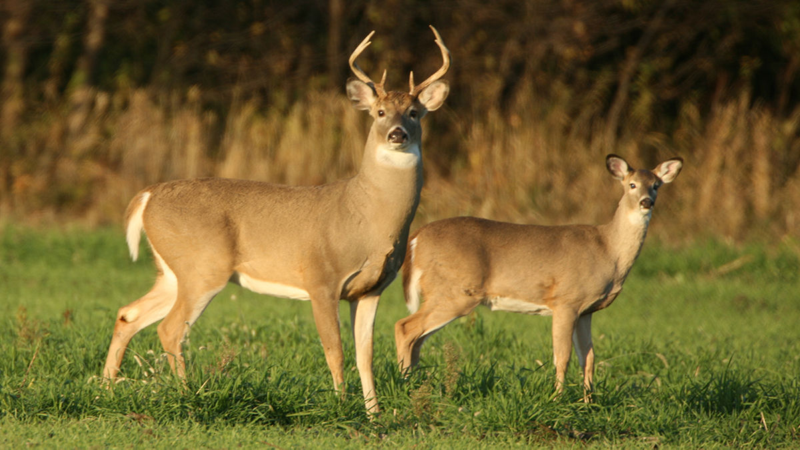

My Nature Adventure Webpage
Welcome to my fun webpage! Here, you can explore images, listen to music, watch a video, and play a game.
Nature Gallery
These images show the beauty of nature and wildlife.



Nature Sounds
Play the music and enjoy the wildlife video.
>Fun Game Zone
Play this Scratch game directly inside the webpage.
Adventure Complete!
I used image, audio, video, and iframe tags to make this HTML media webpage.